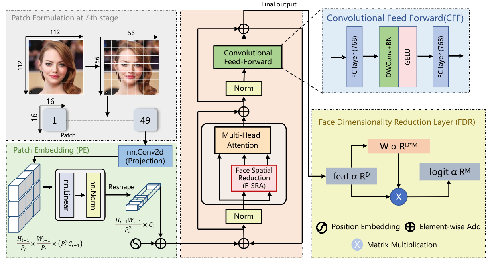
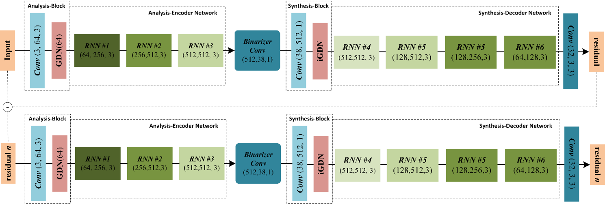

|
Khawar IslamSenior Scientist – Autonomy AI, Neubility, Seoul, South KoreaPrev: Research Scientist – AI, CoreMax Technology, Seoul, South Korea Prev: Chief Technology Officer (CTO) – Gen AI, Upendi.app, Seoul, South Korea Email: khawarr[dot]islam[at]gmail[dot]com CV | Google Scholar | dblp | Github | LinkedIn
Top 5% (M.S.)
2× MVP Award
ICLR Reviewer
|
Summary
Senior Scientist driving autonomy and perception at Neubility. I build robust learning systems across data augmentation, adversarial resilience, dataset curation, OCR, and diffusion-based generation for character consistency and image↔video translation. Recognized in the top 5% of my M.S. cohort and recipient of two MVP awards.
Education
M.S. in Computer Science and Engineering, Sejong University, Seoul — research in image understanding and reconstruction; proposed an image compression approach presented at CVPR Workshops.
News
- Oct 2025 — Serving as an ICLR Reviewer.
International Conferences
International Journals
Awards & Honors
- NeurIPS Support, Sponsored by Naver Labs Europe, DeepMind, and Google AI, 2021
- Full Tuition Fee Waiver, School of Computer Engineering, Sejong University, 2020
- Prof. Stipend, CVPR Lab, Sejong University, 2020
- Conference Travel Grant, Ministry of Planning Commission, Pakistan, 2020
- Merit Scholarship for Bachelor Degree, Quaid-e-Azam Aligarh Society, Karachi, 2018
- Most Valuable Professional Award, C-SharpCorner, India, 2016 & 2017
Recent Research/Industrial Projects
-
High-Quality Video Generation from Diffusion Models (Text-2-Video), 2024 - Present
Designed identity-specific prompts and fine-tuned models for video generation. -
Image Restoration and Enhancement with GANs and Diffusion Models, 2024 - Present
Worked on image super-resolution, deblurring, in-painting, and debazing. -
Image Editing Instructions with Diffusion Models (Image-to-Image), 2023
Integrated Imagic, SINE, and LEDITS for high-resolution image editing. -
Foundation Multimodal Vision Language Models, 2023
Generated captions and evaluated models on various metrics. -
Vision Language Models for Unseen Domains & Domain Shift, 2023
Fine-tuned models to improve robustness and performed experiments on multiple datasets. -
Reliable Lightweight Real-Time Open-Vocabulary Object Detection, 2023
Investigated and fine-tuned models for state-of-the-art performance. -
Online Continual Learning with Blurry Data and Incorrect Labels, 2022
Developed a framework for diversity and purity in memory updates. -
Vision Transformer for General and Age-Invariant Face Recognition, 2021
Proposed a new ViT architecture and conducted experiments on face aging datasets. Academic Activities
- Academic Services
- Technical Volunteer - Advances in Neural Information Processing Systems (NeurIPS) 2021.
- Technical Volunteer - International Joint Conferences on Artificial Intelligence (IJCAI) 2021.
- Technical Volunteer - International Conference on Machine Learning (ICML) 2021.
- Technical Volunteer - International Conference on Learning Representations (ICLR) 2021
- Student Volunteer - IEEE Conference on Computer Vision and Pattern Recognition (CVPR) 2021
- Technical Volunteer - Association for the Advancement of Artificial Intelligence (AAAI) 2021
- Reviewer (International Journal)
- IEEE Transactions on Pattern Analysis and Machine Intelligence (TPAMI).
- International Journal of Computer Vision (IJCV).
- Computer Vision and Image Understanding (CVIU).
- Reviewer (International Conference)
- IEEE Conference on Computer Vision and Pattern Recognition (CVPR) 2019-2023.
- IEEE International Conference on Computer Vision (ICCV) 2019-2023.
- European Conference on Computer Vision (ECCV) 2020-2022.
- Conference on Neural Information Processing Systems (NeurIPS) 2020-2022.
- International Conference on Machine Learning (ICML) 2020-2023.
- International Conference on Learning Representations (ICLR) 2021-2023.
- Association for the Advancement of Artificial Intelligence (AAAI) 2020-2023.
- IEEE Winter Conference on Applications of Computer Vision (WACV), 2020.
- Moderator
- AI Deep Group on Facebook, 23.1K Members.
- Artificial Intelligence, Machine and Deep learning Group, 754.4K members.
- Deep Learning and Machine Learning, 109.5K Members.
- Thailand Deep Learning, 19.8K Members.
- Computer Vision, 129.6K Members.
- Computer Vision and Machine Learning, 17.5K Members.
Summer and Winter Schools
- OxML School, Oxford Machine Learning Summer School, 2022
- NYU AI School, New York Artificial Intelligence School, USA, 2022
- MLSS, Machine Learning Summer School, Taipei, Taiwan, 2021
- EEML, Eastern European Machine Learning Summer School, 2021
Q/A Mentorship Sessions
- Yingzhen Li, Mentor at ICML, Imperial College London
- Evan Shelhamer, Mentor at ICML, DeepMind, Google
- Wei-Lun (Harry) Chao, Mentor at ICLR, Ohio State University
- Shakir Mohamed, Mentor at ICLR, DeepMind, Google
- Emmanuel Kahembwe, Mentor at ICLR, VDE (UK & Ireland)
|
Context-guided Responsible Data Augmentation with Diffusion Models Khawar Islam, Naveed Akhtar International Conference on Learning Representations (ICLRw), 2025 [Paper] |
|

|
DiffuseMix: Label-Preserving Data Augmentation with Diffusion Models Khawar Islam, Muhammad Zaigham Zaheer, Arif Mahmood, Karthik Nandakumar IEEE Conference on Computer Vision and Pattern Recognition (CVPR), 2024 [Paper] [Supplementary] [Project Page] [Code] [Poster] [Dataset] [Video] |
|  |
Face Pyramid Vision Transformer Khawar Islam, Muhammad Zaigham Zaheer, Arif Mahmood British Machine Vision Conference (BMVC), 2022 [Paper] [Supplementary] [Project Page] [Code] [Poster] [Video] |
|  |
Image Compression with Recurrent Neural Network and Generalized Divisive Normalization Khawar Islam, Dang Lien Minh, Sujin Lee, Hyeonjoon Moon IEEE Conference on Computer Vision and Pattern Recognition Workshop (CVPRw), 2021 [Project Page] [Code] [CVF Open Access] [IEEE Xplore] |

|
Face Recognition Using Shallow Age-Invariant Data Khawar Islam, Sujin Lee, Dongil Han, Hyeonjoon Moon Image and Vision Computing New Zealand (IVCNZ), 2021 [PDF] [IEEE Xplore] |

|
Person search: New paradigm of person re-identification: A survey and outlook of recent works Khawar Islam Journal of Image and Vision Computing (IMAVIS), 2020 [Paper] |
The design is taken from Prof. Sunghoon Im, DGIST.